After the chaotic yet unforgettable aquarium adventure, Heather’s birthday celebrations weren’t over yet. That evening, she had invited a few close friends over for a small get-together at her house. There was just one small problem.
Some of her friends were scared of dogs.
Neet gasped dramatically when Heather broke the news. “Scared? Of me?! But I am a delight!”
Buddy sighed. “I mean, to be fair, you did jump into an aquarium today. That can be a lot for some people.”
Heather knelt beside them. “Guys, I promise I’ll introduce you properly, but for now, you have to stay in the guest room while everyone settles in.”
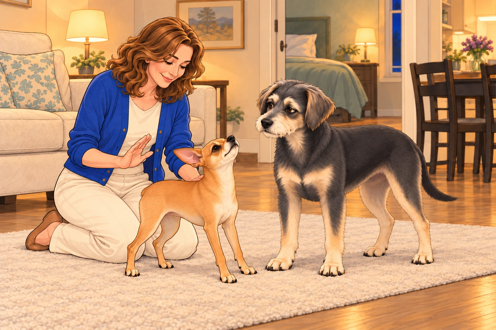
Neet squinted. “So what you’re saying is… we have to be in quarantine?”
Heather groaned. “It’s not quarantine. It’s just—”
Neet threw himself on the floor. “I refuse to be silenced!”
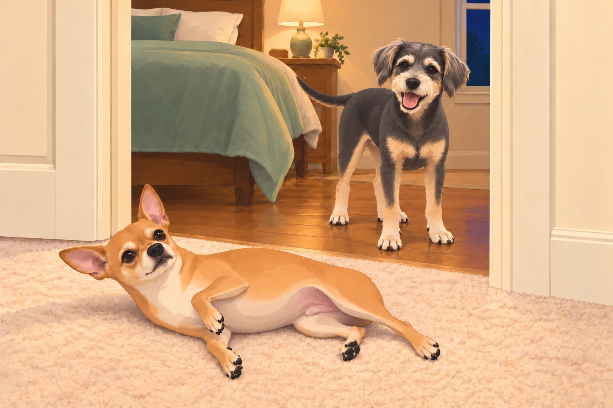
Heather stroked his head. He remained flat, making her do the work.
“I’ll come and get you,” she said. “Let me say hello first.”
Buddy stood in the guest-room doorway and waited. “Come on, Shakespeare. She said she’d come back.” Neet followed, still complaining.
He stopped just inside to look back at Heather. She blew them a kiss before closing the door.
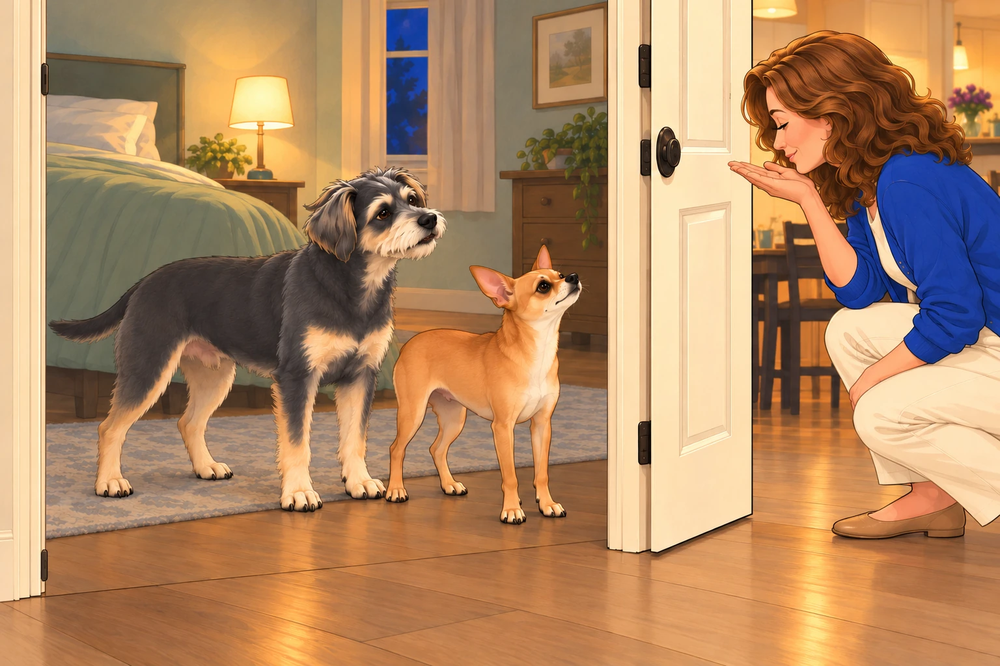
Neet looked at Buddy. “That was a farewell gesture.”
“She’s in the next room.”
Operation: Meet the Humans
Once all of Heather’s friends arrived, the party was lively with laughter, music, and the mouthwatering smell of food. Meanwhile, in the guest room, Neet was plotting.
“Alright, we need a strategy to make them love us,” Neet whispered to Buddy. “Step one: Charm offensive. Step two: Selective whining. Step three: Dessert heist.”
Buddy wanted a place beside somebody who would scratch his ears. He had a simpler plan: sit down, stay still, look available.
“You always end with a heist,” he said.
Neet wagged his tiny nub. “Because it works.”
Buddy sat to demonstrate. Neet circled him, checking the performance from every side.
“What happens next?”
“Somebody comes over.”
Neet came over. Buddy leaned away from his nose.
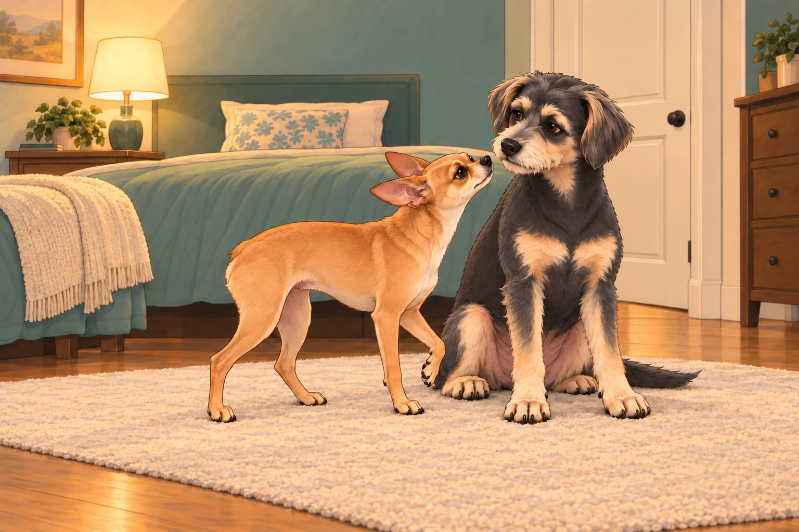
“Somebody with hands.”
A burst of laughter came from the living room. Both dogs turned toward the door.
“And then he went straight into the tank,” Heather was saying.
Neet stood up. “She’s telling them about my expedition.”
“Your fall.”
More laughter.
Neet pressed his nose to the gap beneath the door. “They need the swimmer’s perspective.”
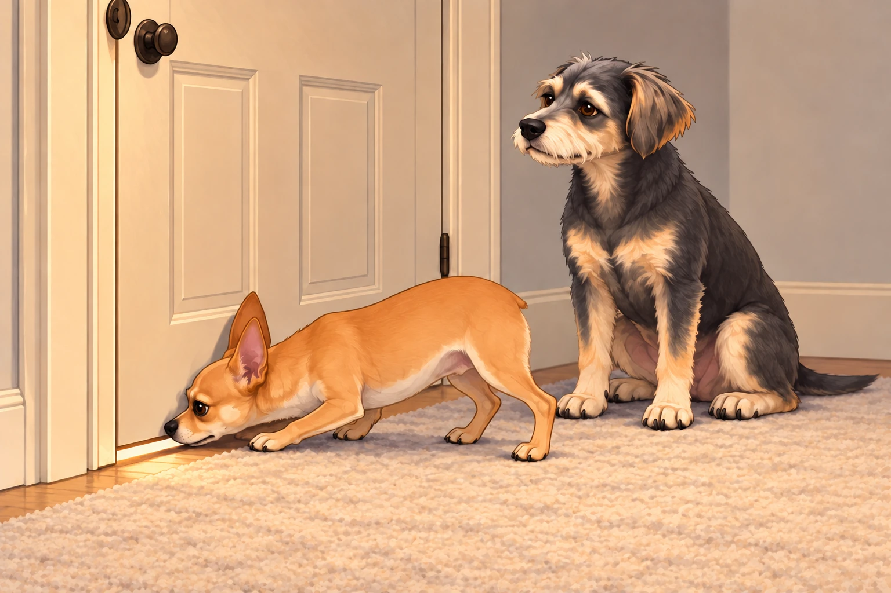
He gave one urgent whine. Heather’s footsteps approached, and he glanced back at Buddy triumphantly.
“Step two.”
Heather peeked into the room. “Alright, guys. Time to meet everyone. Please—please behave.”
Neet grinned. “I am the embodiment of good behavior.”
Buddy moved one pace away from him. He wanted his own introduction.
Heather didn’t buy it but sighed and opened the door.
The guests all turned as Neet and Buddy walked in.
Neet struck a majestic pose. “Hello, humans!”
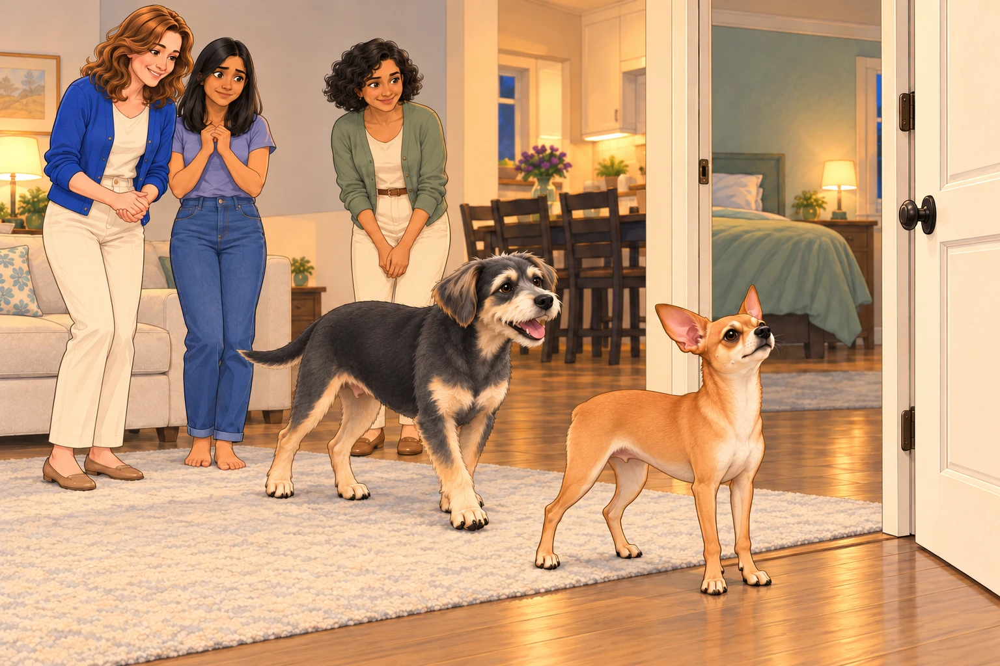
Buddy rolled his eyes. “You’re not a wizard.”
One of Heather’s friends, Priya, immediately stepped back. “Um… they don’t bite, right?”
Neet gasped. “I only bite when necessary.”
Heather laughed nervously. “They’re super friendly. Just, um, let them come to you.”
Then she stayed beside Priya. “You don’t have to pet them. We can take this slowly.”
Buddy stopped a little way from one of the nervous guests and sat. He wanted a pat, but he let her choose the distance. When she held out a hand, he went the last step. Her shoulders dropped. Buddy leaned into the offered scratch, just enough to suggest that this could be a long-term arrangement.
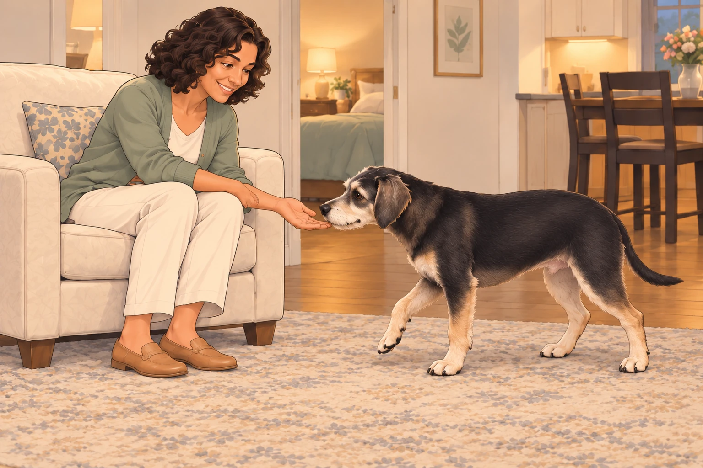
When her hand paused, he nudged it once. She drew it back, surprised.
Buddy immediately sat again. He had almost frightened away his own ear scratch. This was a delicate business.
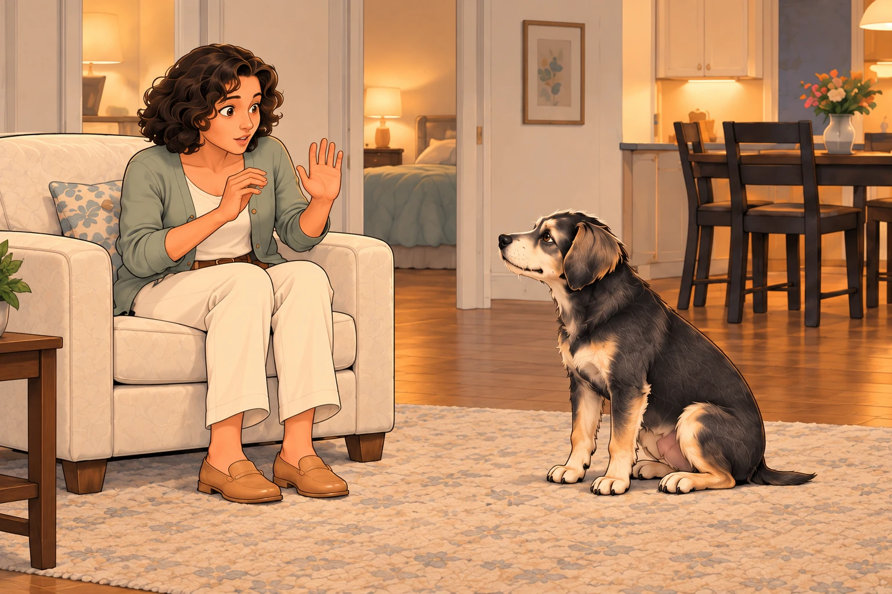
He waited while she spoke to Heather. At last her hand returned, and he closed his eyes. Waiting had been expensive, but the result was excellent.
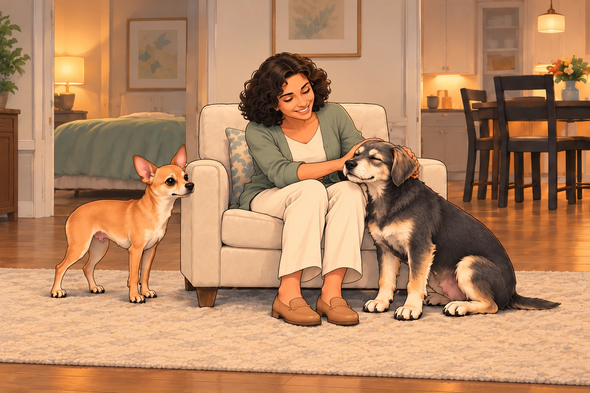
Neet watched for a moment. Apparently Buddy’s entire performance was sitting. He could improve on that.
He darted from person to person, sniffing their feet, jumping onto the couch, and—when Priya least expected it—licked her ankle.
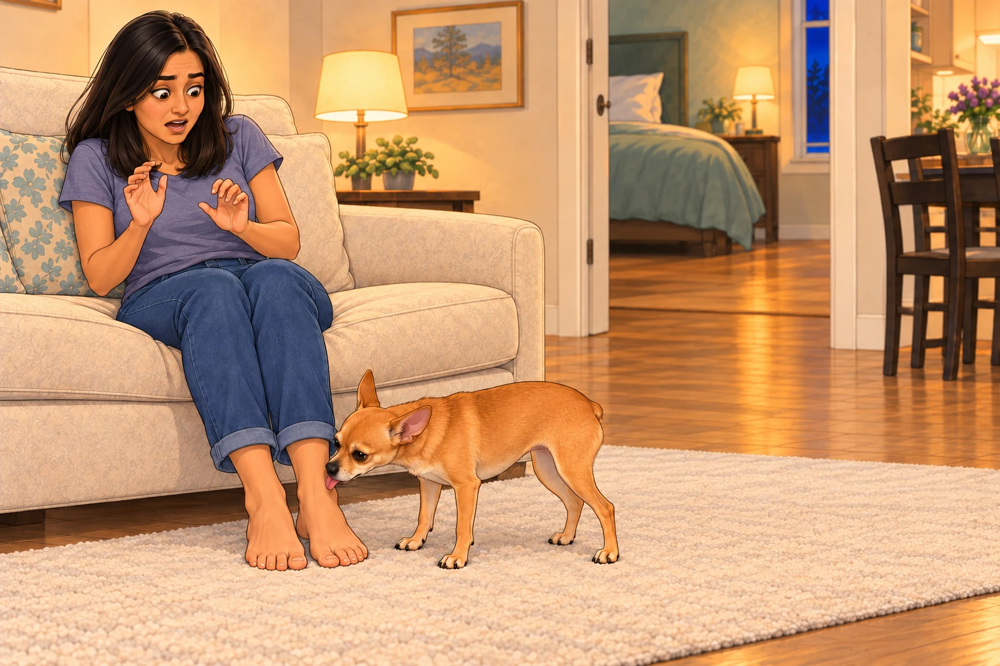
Priya shrieked. “IT TOUCHED ME!”
Neet looked up. “That’s called friendship.”
Priya lifted both feet onto the couch. Neet took this as room being made for him.
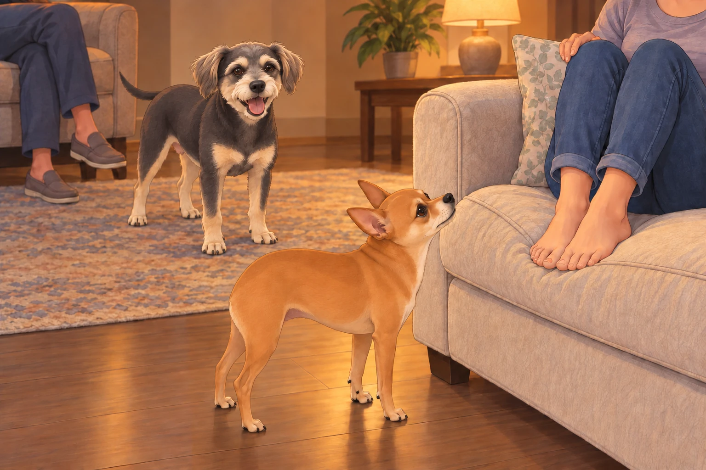
Heather, mortified, scooped Neet up. “Neet!”
Neet wagged his nub. “She screamed. That means we’ve bonded.”
“Are you okay?” Heather asked Priya.
Priya nodded, then looked down at her ankle. “I wasn’t expecting that.”
“Neither was I.” Heather settled Neet against her. “You can keep your feet wherever you like.”
Neet peered over her arm at the couch. His new friend had retained a great deal of space for him.
Buddy opened one eye. “She’s trying to get away from you.”
“She hasn’t left the party.”
“It’s a good party.”
A Second Introduction
Heather kept Neet with her while the conversation resumed. Priya lowered one foot, watched Neet, then lowered the other.
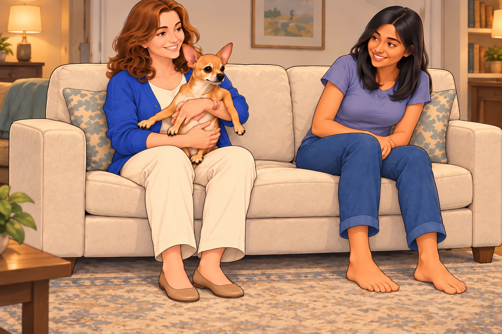
Neet noticed. “She’s ready.”
Buddy’s guest had begun scratching behind his other ear. He was reluctant to interrupt, but Neet was looking at Priya’s ankles again.
“Try sitting,” he said.
“I can sit.”
“On the floor. Away from her feet.”
When Heather put Neet down beside her, he sat immediately. He raised his chin, straightened his back, and stared at Priya with the intensity of a dog waiting for a door to open.
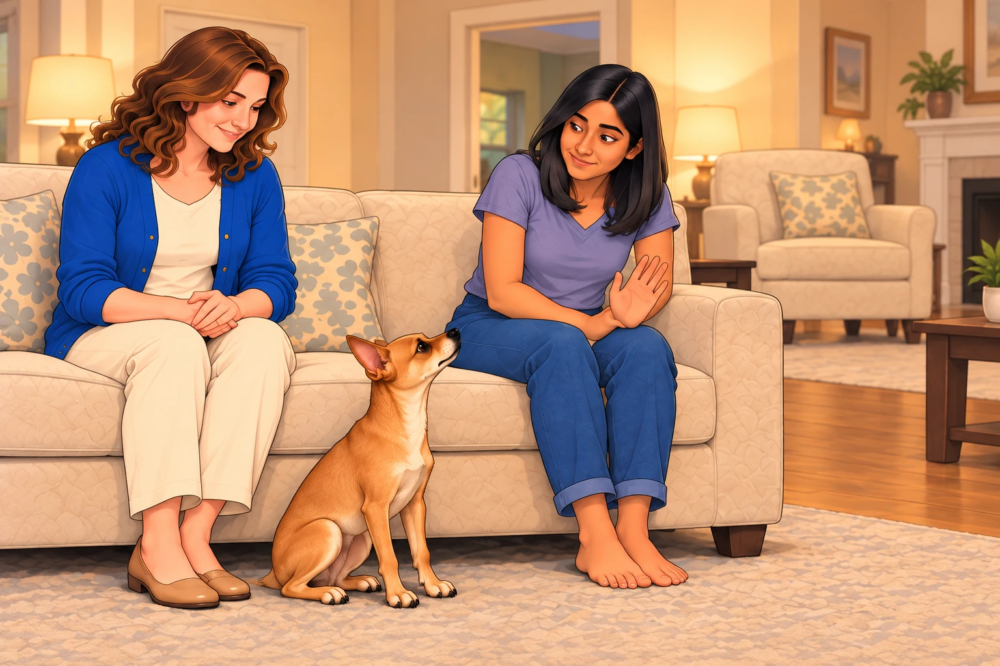
Priya shifted. Neet leaned forward.
Buddy sighed. “You’re still chasing her. You’ve just stopped moving.”
Heather touched Neet’s shoulder and drew his attention toward her. He looked up. She scratched his head, and his ears softened before he remembered he was making an impression.
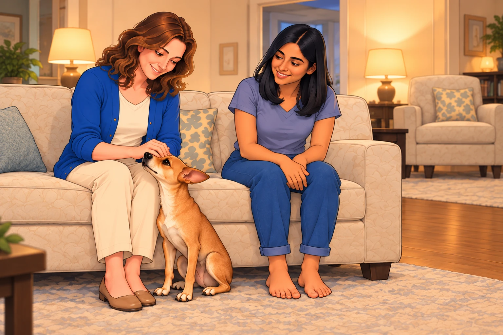
Priya smiled. “Oh. He can do that.”
“Sometimes,” Heather said.
Neet took the smile as applause. He remained seated to see whether more would arrive.
Buddy let his head sink beneath his guest’s hand. He had helped Neet, kept his own place, and acquired a person who knew where the good ear scratch was. This was becoming one of his finest evenings.
Then Arjun went into the kitchen.
The Sheera Cake Revelation
After the initial introductions—and mild panic—the party settled into a comfortable rhythm. Then came the highlight of the evening: the Sheera Cake.
One of Heather’s friends, Arjun, had made a traditional Indian Sheera cake, a rich and fragrant dessert made with semolina, ghee, and cardamom. As soon as the smell filled the air, Neet and Buddy’s heads snapped toward the kitchen.
Neet drooled. “I need it.”
Buddy whispered, “Stay cool.” He kept his seat beneath the scratching hand. His nose, however, had already left the conversation.
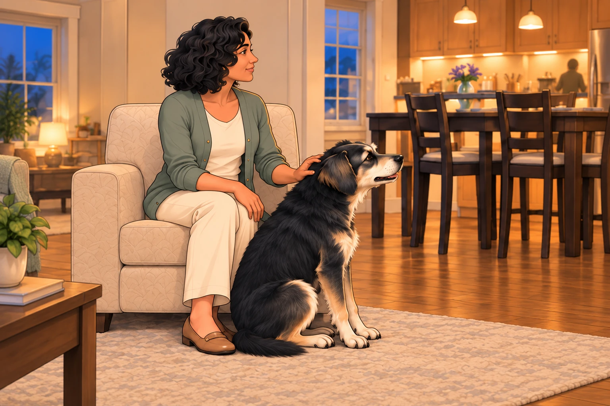
Arjun brought the cake to the dining table. Buddy’s new friend stood up to join everyone. Her hand disappeared.
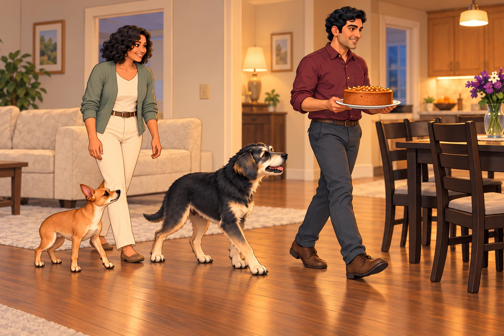
Buddy followed her, hoping the arrangement might continue at the table. He sat beside her chair, but she was looking at the cake. So was Heather. So was everybody.
“They’ve all abandoned us,” Neet said.
Buddy sniffed. He could understand their reasoning.
Heather cut the first slice, and the moment it hit her tongue, she gasped. “Oh my gosh. This is incredible.”
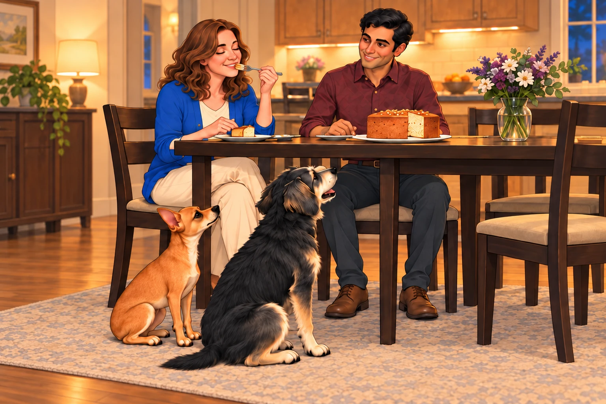
Arjun smiled. “I was hoping you’d like it.”
“Oh, you’ve spoiled me now,” Heather said.
Everyone grabbed a slice, and within moments, they were raving about the cake.
Buddy put his chin against his friend’s knee. She gave his head a quick stroke and returned to her plate.
He tried the other knee. No improvement.
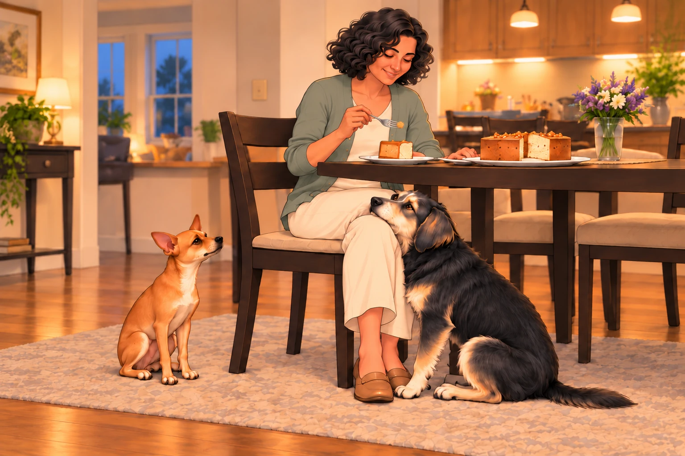
Neet was staring at the serving plate. Every slice moved away from it. Every human already had some. The cake was getting smaller while he remained exactly as hungry.
“Sitting isn’t working,” he whispered.
“It worked earlier.”
“Earlier there wasn’t cake.”
Buddy looked up at his friend. A crumb clung to her fork, then vanished into her mouth. He swallowed.
Neet couldn’t take it anymore.
In a move that could only be described as part desperation, part acrobatics, Neet leaped onto the dining chair, then onto the table, and grabbed an entire chunk of cake before Heather could stop him.
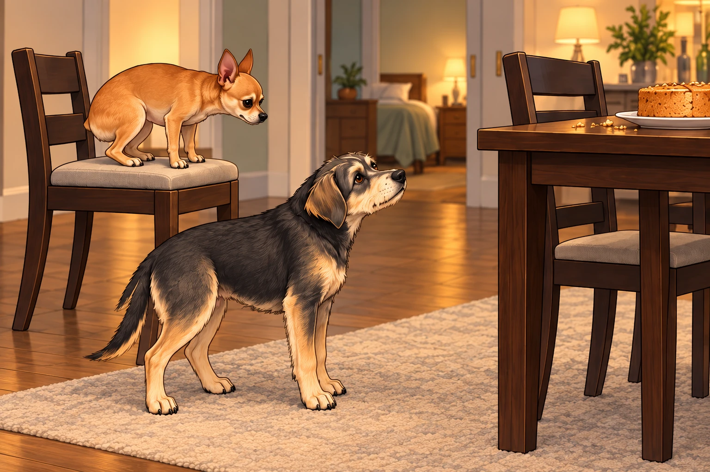
“NEET!”
Too late.
Neet chomped into the Sheera cake with the enthusiasm of someone who had just discovered the meaning of life.
His eyes widened.
“Oh… my… DOG.”
Buddy looked from the cake to the guest who had been stroking him. She was looking at Neet.
He had worked hard to become the trustworthy one.
He could keep sitting beside the chair, or he could find out what had happened to Neet’s face.
He climbed onto the dining chair, planted his forepaws on the table edge, and took a piece from a plate. He did it quietly, as though volume were the objection.
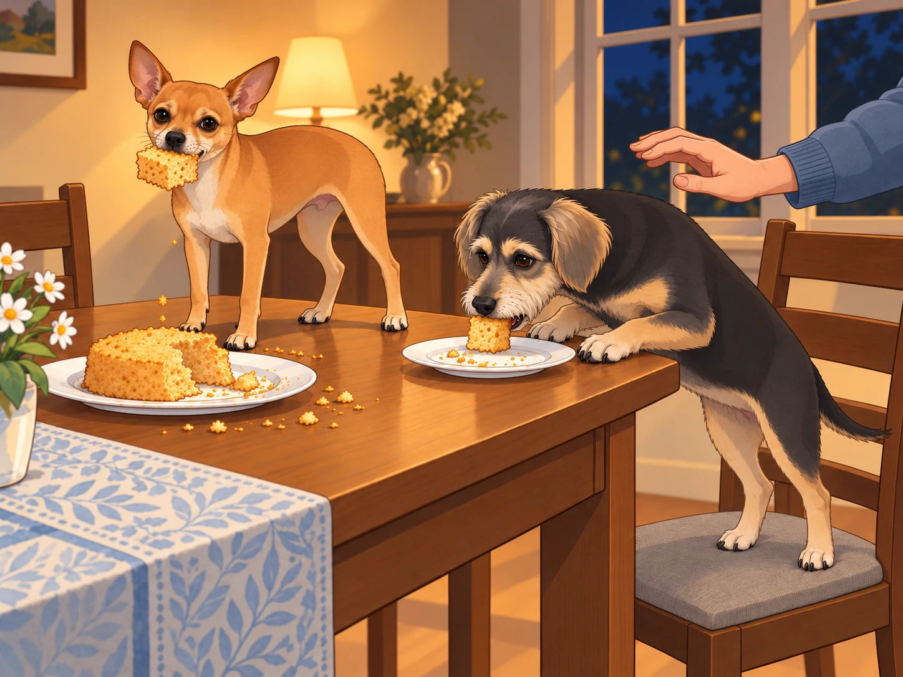
Everyone at the table stared in shock.
Arjun shook his head. “I mean… I should be mad, but honestly? I respect it.”
Heather covered her eyes. Neet licked the crumbs off his nose. “I regret nothing.”
Buddy swallowed. “That was… divine.”
Heather sighed but couldn’t help laughing. “Fine. Happy birthday to me, I guess.”
She lifted Neet down, then helped Buddy off the chair. Arjun moved the rest of the cake to the counter.
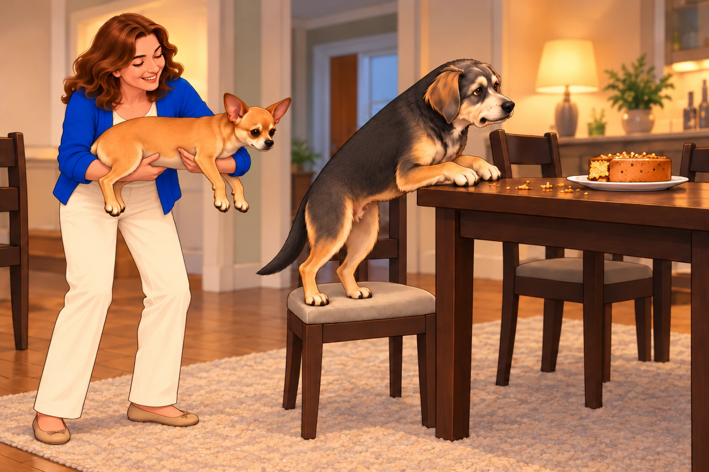
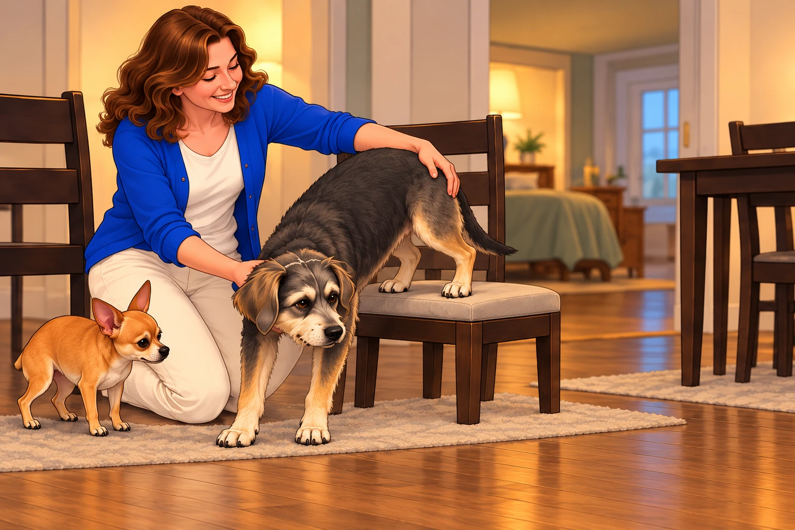
Buddy sat beside his new friend again, carefully licking the last crumb from his beard. She looked at him. He sat a little straighter.
“Oh, you too,” she said.
He had hoped the evidence would be gone before the inspection. She brushed a crumb from his eyebrow.
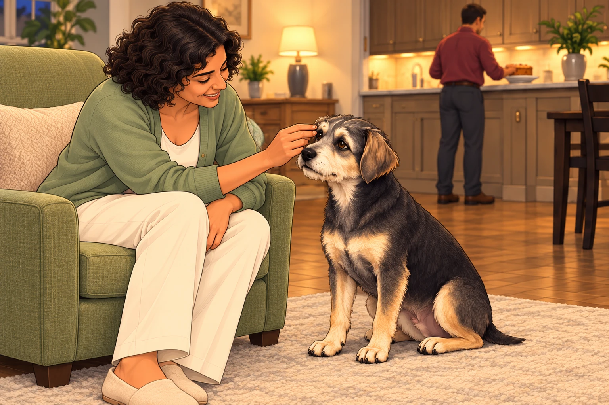
“The quiet one,” she added, laughing, and scratched his ears.
Buddy leaned into her hand. He had lost his excellent reputation, but apparently the ear-scratch arrangement could survive it.
Priya was laughing too. When Heather sat beside her, Neet settled near Heather’s feet. For once he stayed where he had landed.
Priya looked down at him, then at Heather. “I think I can manage sitting next to him.”
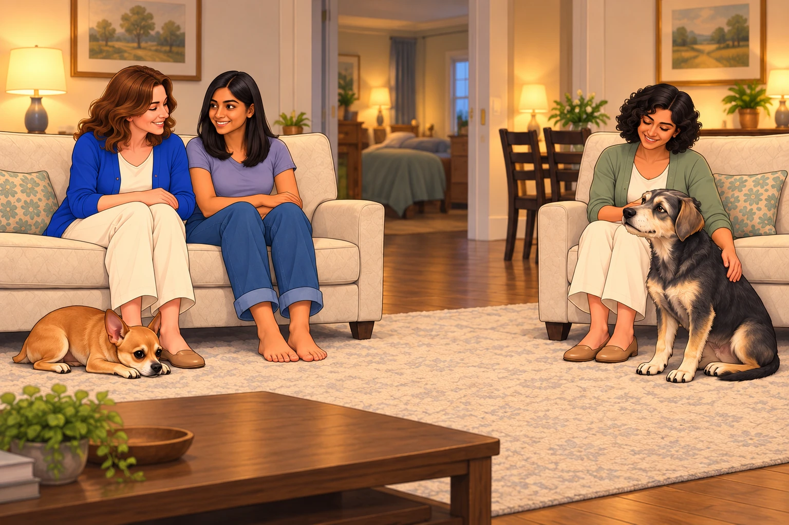
“That’s plenty,” Heather said.
Neet glanced at the counter. Arjun was cutting the remaining cake into smaller pieces.
“For taking home,” he told the guests.
Neet stood.
Heather rested her hand on his back. “You’ve had your party.”
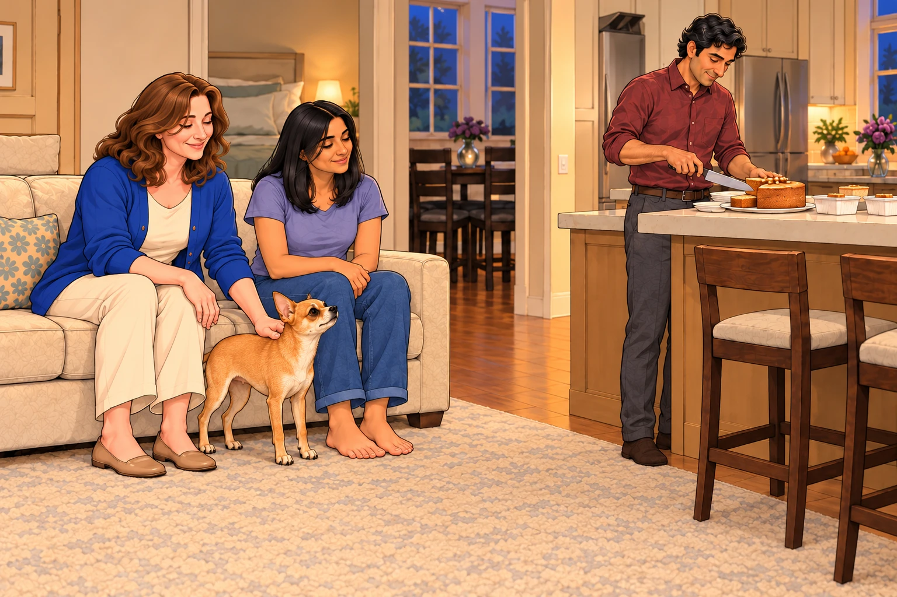
Neet sat again. Across the room, Buddy had closed his eyes beneath the hand. Priya’s feet were still on the floor, and nobody was shutting the guest-room door. Neet decided to count this as a successful introduction.
“Step three,” he whispered.
Buddy opened one eye. “I’m staying on step one.”
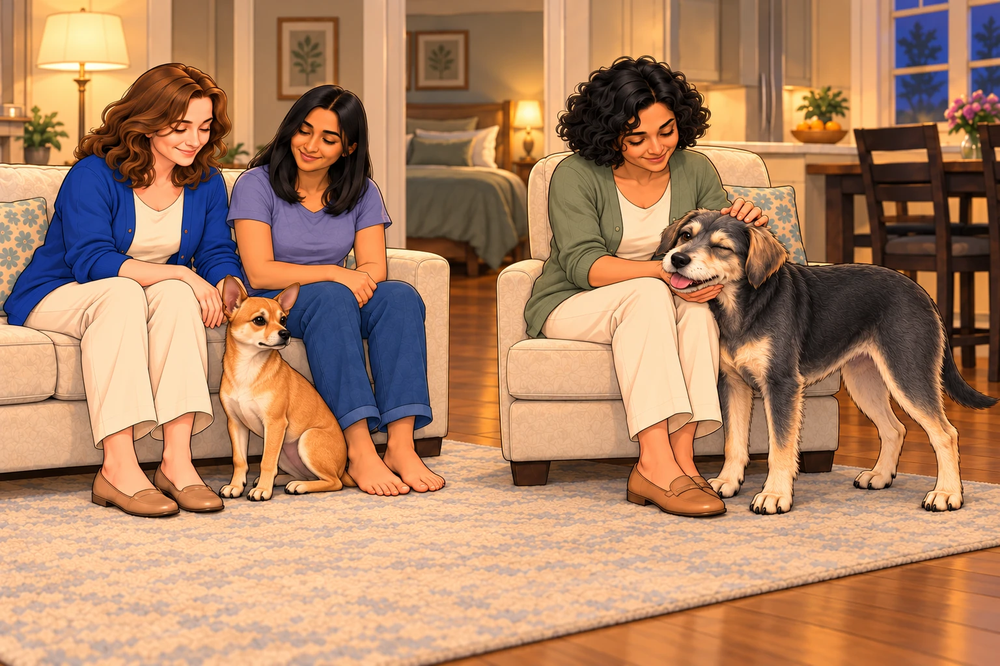